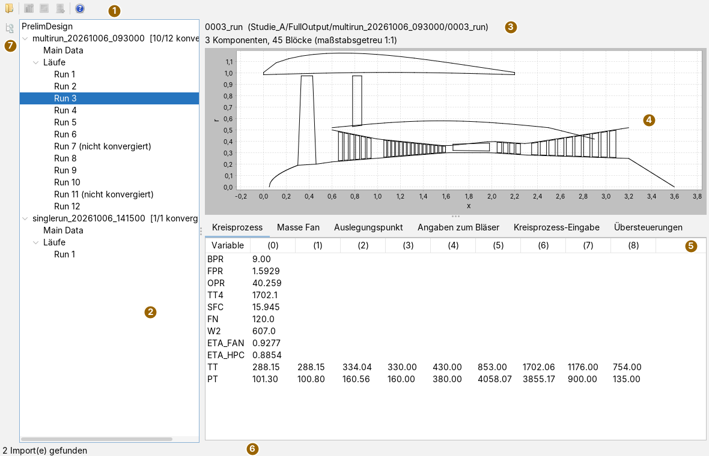
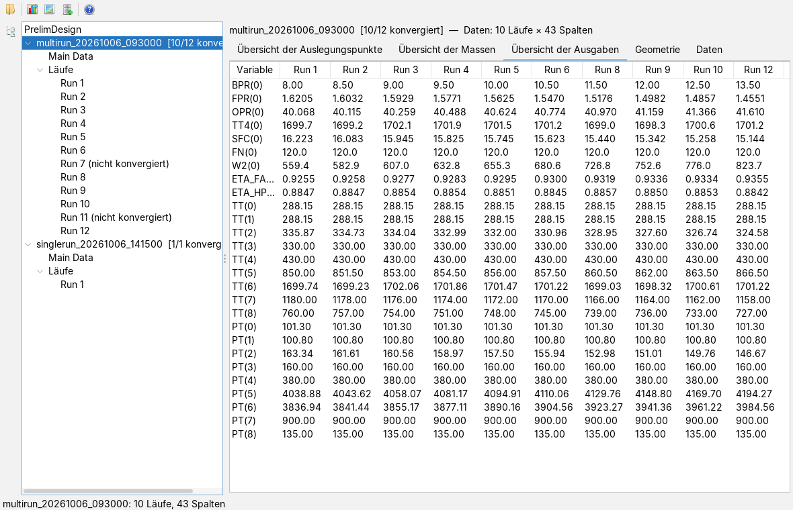
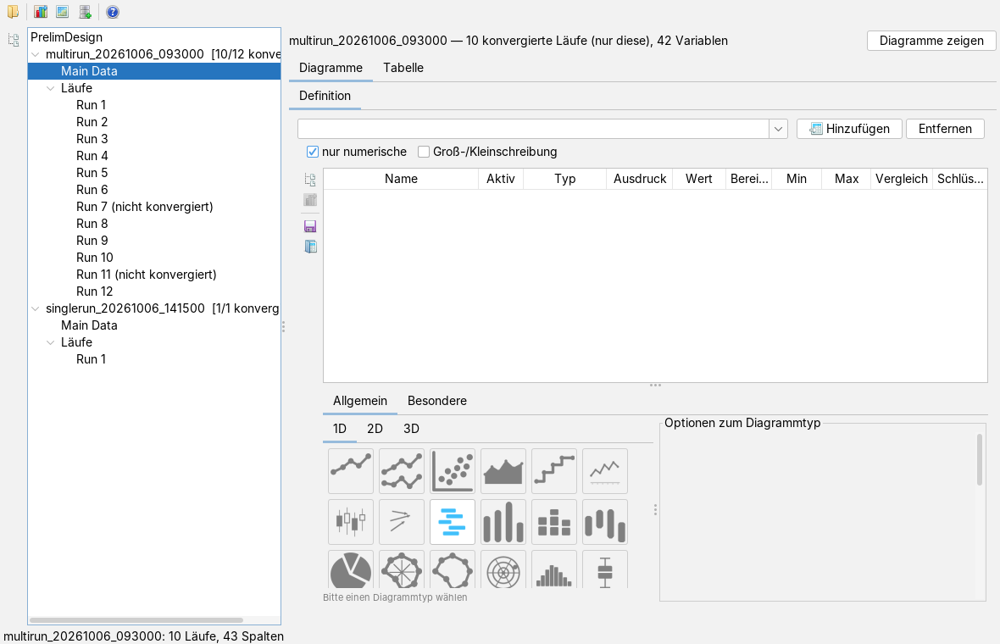
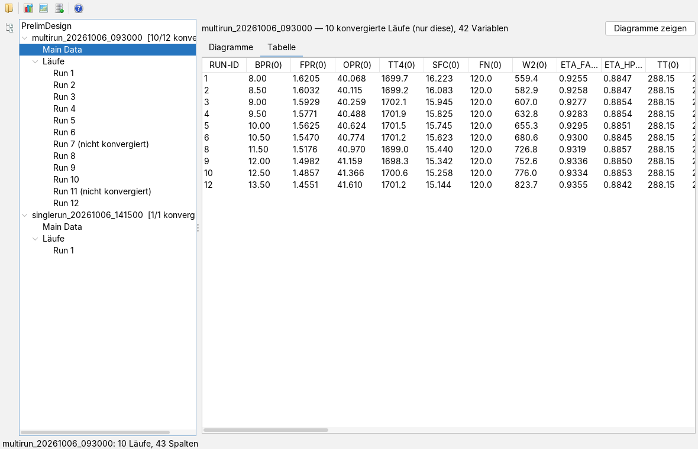
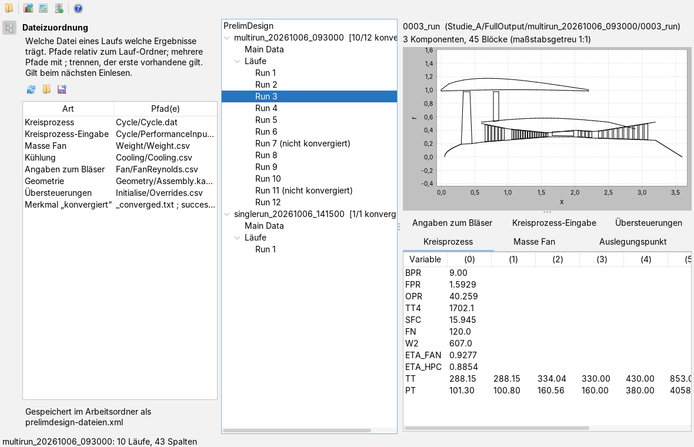

PrelimDesign-Ergebnisse einlesen und auswerten
Bedienseite, Stand 06.10.2026. Wie man die Ergebnisordner einer Studie einliest, einen Lauf im Einzelnen ansieht, alle Läufe vergleicht, die konvergierten Läufe zu einer Tabelle zusammenführt und diese an Diagramme, Kennfelder oder eine Datenbank weitergibt. Die Bilder sind Bildschirmfotos der App mit einer frei erfundenen Studie: zwölf Läufe, in denen das Nebenstromverhältnis von 8 bis 13,5 variiert wird, zwei davon nicht konvergiert.
Das Fenster
Die App öffnet man im Menü Anwendungen mit Neues PrelimDesign oder mit Alt+E. Links steht der Baum der eingelesenen Studien, rechts die Ansicht dessen, was im Baum gewählt ist. Ganz links liegt die schmale Leiste mit der Karte Dateizuordnung.

Unter der Wurzel PrelimDesign hängt je eingelesenem Ergebnisordner ein Knoten mit seinem Namen und der Zahl der konvergierten Läufe, etwa [10/12 konvergiert]. Darunter stehen Main Data, die zusammengeführte Tabelle, und Läufe mit einem Knoten je Lauf; nicht konvergierte Läufe tragen den Zusatz (nicht konvergiert). Die Trennlinie zwischen Baum und Ansicht lässt sich verschieben.
Die Werkzeugleiste
Die Knöpfe tragen nur Symbole; was sie tun, steht im Tooltip. Die drei Knöpfe zur Weitergabe sind erst aktiv, wenn für die gewählte Studie die zusammengeführte Tabelle gebaut ist, also nach einem Klick auf den Knoten der Studie oder auf Main Data.
| Symbol | Tooltip | Was geschieht |
|---|---|---|
| PrelimDesign-Ergebnisse einlesen | Ordner wählen und einlesen (siehe unten). | |
| An charts übergeben | Die zusammengeführte Tabelle geht als Primärdaten an die Diagramm-App, die dabei nach vorn kommt. | |
| An maps übergeben | Die Tabelle geht als Arbeitslinie an die Kennfeld-App, ein Lauf je Punkt. | |
 | Als H2 speichern | Die Tabelle wird eine H2-Datenbank. |
 | Hilfe | Öffnet diese Seite in der Doku-App, wie F1. |
Ergebnisse einlesen
- Den Ordnerknopf drücken und einen Ordner wählen. Es genügt einer, gleich auf welcher Ebene (siehe Tabelle).
- Die App durchsucht ihn im Hintergrund und hängt jeden gefundenen Ergebnisordner in den Baum. Die Statuszeile meldet, wie viele es sind; ein schon eingelesener Ordner kommt nicht doppelt.
- Den Knoten der Studie öffnen und einen Lauf, die Studie selbst oder Main Data wählen.
| Gewählter Ordner | Was eingelesen wird |
|---|---|
Projektordner, der einen Ordner FullOutput enthält | alle Ergebnisordner darin |
FullOutput selbst | alle Ergebnisordner darin |
ein Ordner multirun_… | dieser Mehrfachlauf, eine Parameterstudie; jeder Unterordner, dessen Name mit einer Zahl beginnt, ist ein Lauf mit dieser Nummer |
ein Ordner singlerun_… | dieser Einzellauf |
Andere Ordner unter FullOutput werden übergangen und im Protokoll vermerkt. Passt nichts, sagt die Statuszeile Keine multirun_/singlerun_-Ordner gefunden; meist war eine Ebene zu tief oder zu hoch gewählt.
Konvergiert ist ein Lauf, wenn in seinem Ordner eine Datei _converged.txt oder success_info.json liegt; das Merkmal ist aus der Vorgängerfassung übernommen, damit alte und neue Auswertungen vergleichbar bleiben. Welche Dateien gelesen werden, legt die Dateizuordnung fest. Nur konvergierte Läufe gehen in Vergleich und Zusammenführung ein.
Ein abgebrochener Lauf hat Zahlen in seinen Dateien, sie bedeuten nur nichts. Wer sie mitnähme, bekäme Punkte, die aussehen wie Ergebnisse und keine sind. Ein Blick auf das Verhältnis im Baum, etwa [10/12 konvergiert], lohnt sich vor jeder Auswertung: Liegt es deutlich unter der Erwartung, stimmt etwas mit der Studie nicht.
Dateien in UTF-8 und in Windows-1252 werden gelesen; Zeichen wie ° und µ brechen nichts ab. Fehlt einem Lauf eine Datei, bleibt die Stelle leer; Hinweise beim Lesen landen im Protokoll, die Statuszeile nennt ihre Zahl.
Einen Lauf ansehen
Ein Klick auf einen konvergierten Lauf zeigt oben die Kopfzeile mit Ordnername und Pfad, darunter die Geometrie als Meridianschnitt: Achse x waagrecht, Radius r senkrecht, beide im selben Maßstab, damit nichts verzerrt ist. Die Zeile darüber nennt die Zahl der Bauteile und Linienzüge. Fehlt die Geometrie, steht dort Keine Geometrie. Die Trennlinie unter der Geometrie lässt sich verschieben.
Unten liegen die Ergebnisdateien als Reiter:
| Reiter | Inhalt |
|---|---|
| Kreisprozess | Größen der Kreisprozessrechnung, je Zeile eine Größe; die Spalten (0), (1), … sind die Werte an den Stationen, in der Reihenfolge der Datei. |
| Masse Fan | die Massen aus der Massenrechnung, im selben Aufbau. |
| Auslegungspunkt | Parameter und Wert des Auslegungspunkts als Tabelle. |
| Angaben zum Bläser | die Tabelle der Bläserdatei wie gelesen; eine Kopfzeile aus Text wird zu Spaltennamen. |
| Kreisprozess-Eingabe | dieselbe Eingabedatei des Auslegungspunkts als Text, so wie sie im Ordner steht. |
| Übersteuerungen | die Tabelle der Übersteuerungen wie gelesen. |
Ein nicht konvergierter Lauf zeigt nur den grauen Hinweis Lauf nicht konvergiert; seine Dateien werden gar nicht erst gelesen.
Alle Läufe vergleichen

Ein Klick auf den Knoten der Studie liest alle konvergierten Läufe (parallel, das Ergebnis steht trotzdem in Laufreihenfolge) und zeigt fünf Reiter: Übersicht der Auslegungspunkte, der Massen, der Ausgaben, Geometrie (die des ersten konvergierten Laufs) und Daten (die zusammengeführte Tabelle wie unter Main Data). Die Kopfzeile nennt, wie viele Läufe und Spalten die zusammengeführte Tabelle hat.
Die Zeilen sind die Vereinigung aller Größen, die in irgendeinem Lauf vorkommen. Fehlt eine Größe in einem Lauf, bleibt dort die Zelle leer; nichts rückt auf. Nur die Größen zu nehmen, die alle Läufe haben, ergäbe kürzere Tabellen und ließe still verschwinden, was nur ein Teil der Studie ausgibt. Die Vereinigung zeigt die Lücken, statt sie zu verbergen.
Main Data: eine Tabelle für alles


Main Data ist die zusammengeführte Tabelle: eine Zeile je konvergiertem Lauf, die erste Spalte RUN-ID ist die Laufnummer. Jede Spalte heißt NAME(i): Größe aus Kreisprozess, Massen oder Kühlluft und Stelle i in ihrer Zeile; aus der Bläserdatei kommen die relativen Machzahlen je Stufe und Stromlinie. Ein Lauf ohne Kreisprozessdatei fehlt. Unlesbare Werte wie NaN oder #NAME? werden leere Zellen. Bringen zwei Dateien eines Laufs dieselbe Spalte mit verschiedenen Werten, gilt der spätere, und das Protokoll meldet es einmal je Spalte.
Der Reiter Diagramme bettet die Diagrammoberfläche der Diagramm-App ein: Variablen auswählen, ihnen Rollen geben, einen Diagrammtyp aus 1D, 2D oder 3D wählen, wie dort beschrieben. Die physikalische Größe einer Spalte ist aus ihrem Namen vorbelegt; die Einheit bleibt leer und wird dort gesetzt. Der Knopf Diagramme zeigen oben rechts tut dasselbe wie An charts übergeben. Der Reiter Tabelle zeigt die Zahlen.
Weitergeben
| Ziel | Wie | Wofür |
|---|---|---|
| Diagramm-App | Knopf An charts übergeben; die Diagramm-App öffnet sich und übernimmt die Tabelle unter dem Namen PrelimDesign: <Ordnername>. | unmittelbar auftragen, ohne Zwischendatei |
| Kennfeld-App | Knopf An maps übergeben; die Läufe werden eine Arbeitslinie im Datenbaum. Erneutes Übergeben ersetzt die Linie gleichen Namens. | die Läufe auf den Kennfeldern |
| H2-Datenbank | Knopf Als H2 speichern, Datei wählen (vorgeschlagen: Ordnername mit .mv.db). Die Tabelle heißt PRELIMDESIGN_<ORDNERNAME>, Sonderzeichen werden zu _. | wiederholtes Abfragen, mehrere Studien nebeneinander |
In der Datenbank bekommt jede Spalte einen Typ: Zahl, wenn alle belegten Zellen Zahlen sind, sonst Text. Eine Spalte mit Zahlen und Vermerken wird also als Text abgelegt; das kostet Vergleichbarkeit, erhält aber den Inhalt vollständig. Die Datenbank lohnt sich, sobald dieselben Daten mehrfach abgefragt werden: „alle Läufe mit Druckverhältnis über 40, nach Verbrauch sortiert“ ist als Abfrage eine Zeile.
Zwischenspeicher
Was der Knoten der Studie einmal gelesen hat, legt die App in einem Zwischenspeicher im Programmordner ab. Beim nächsten Mal prüft sie zuerst Größe und Änderungszeit aller beteiligten Dateien. Stimmt alles, kommt die Übersicht ohne Lesen aus dem Speicher, und die Statuszeile sagt Übersicht aus dem Zwischenspeicher vom …. Sind nur Läufe hinzugekommen, werden nur diese gelesen (Übersicht ergänzt); jede andere Änderung baut alles neu auf. Ein beschädigter Speicher wird gemeldet und neu gebaut; maßgeblich sind immer die Ergebnisordner.
Wer gleich Main Data wählt, ohne vorher den Knoten der Studie zu öffnen, bekommt die Tabelle direkt aus den Dateien.
Dateizuordnung

Welche Datei eines Laufs welche Ergebnisse trägt, steht nicht fest im Programm, sondern in der Dateizuordnung. Der Knopf ganz links in der Leiste öffnet sie als Karte; derselbe Knopf schließt sie wieder.
Die Pfade sind relativ zum Ordner des Laufs. Eine Zelle der Spalte Pfad(e) lässt sich wie jede Tabellenzelle bearbeiten; mehrere Pfade trennt ein Semikolon, gesucht wird in dieser Reihenfolge, und der erste vorhandene gilt. So lassen sich Studien mit verschiedenen Namen nebeneinander lesen. Absolute Pfade und .. werden nicht angenommen; bleibt kein gültiger Pfad, gilt die Vorgabe der Zeile. Eine Änderung gilt beim nächsten Einlesen, schon eingelesene Studien bleiben, wie sie sind.
| Art | Vorgabe |
|---|---|
| Kreisprozess | Cycle/Cycle.dat |
| Kreisprozess-Eingabe | Cycle/PerformanceInput.dat |
| Masse Fan | Weight/Weight.csv |
| Kühlung | Cooling/Cooling.csv |
| Angaben zum Bläser | Fan/FanReynolds.csv |
| Geometrie | Geometry/Assembly.kasm; die Teile liegen im selben Ordner |
| Übersteuerungen | Initialise/Overrides.csv |
| Merkmal „konvergiert“ | _converged.txt oder success_info.json |
| Symbol | Tooltip | Was geschieht |
|---|---|---|
| Vorgabe | stellt die Namen der Tabelle oben wieder her. | |
| Zuordnung laden | liest eine XML-Datei und setzt sie. Unbekannte Arten und unerlaubte Pfade werden übergangen und im Protokoll genannt; ist die Datei keine Dateizuordnung, bleibt alles, wie es war. | |
| Zuordnung speichern | schreibt die geltende Zuordnung in eine XML-Datei, etwa um sie weiterzugeben. |
Jede Änderung schreibt die App sofort in die Datei prelimdesign-dateien.xml im Arbeitsordner und liest sie beim nächsten Öffnen wieder. Die Datei ist einfaches XML und lässt sich auch von Hand schreiben:
<dateizuordnung version="1"> <datei art="kreisprozess" pfad="Cycle/Cycle.dat"/> <datei art="masse" pfad="Weight/Weight.csv"/> <datei art="konvergiert" pfad="_converged.txt"/> <datei art="konvergiert" pfad="success_info.json"/> </dateizuordnung>
Die Arten heißen in der Datei kreisprozess, kreisprozess-eingabe, masse, kuehlung, fan, geometrie, uebersteuerung und konvergiert. Fehlt eine Art, gilt für sie die Vorgabe.
Was gespeichert wird
Beim Sichern des Arbeitsbereichs merkt sich die App die eingelesenen Ordner und liest sie beim nächsten Start neu ein. Ein Arbeitsbereich, der mit einer älteren Fassung unter dem früheren App-Namen gesichert wurde, öffnet sie ebenso. Die Dateizuordnung liegt getrennt davon im Arbeitsordner (siehe oben). Die gewählte Ansicht und die Diagrammdefinitionen unter Main Data gehören nicht dazu; die Definitionen lassen sich aber mit den Knöpfen der Diagrammoberfläche in eine Datei schreiben und wieder laden. Die zusammengeführte Tabelle selbst behält man, indem man sie als H2 speichert.
Tastatur und Maus
Alt+E öffnet die App, F1 diese Seite. Im Baum wählen die Pfeiltasten und ein Mausklick; Plus und Minus vor einem Knoten klappen ihn auf und zu. In der Geometrie vergrößert ein mit der Maus aufgezogenes Rechteck, das Kontextmenü (rechte Maustaste) bietet Zoom, Kopieren, Speichern und Drucken des Bilds. Weitere Tastenkürzel hat die App nicht.
Grenzen
- Die Dateiformate sind aus dem Vorgängerprogramm und aus erzeugten Ordnern abgeleitet; abweichend aufgebaute Dateien werden so weit gelesen, wie es geht, der Rest steht im Protokoll.
- Eine CSV-Ausfuhr hat die App nicht; dafür gibt es die H2-Datenbank oder die Diagramm-App.
- Ein Temperatur-Entropie-Diagramm und die Definition eigener Geometrielinien fehlen noch.
- Die App liest und ordnet, sie rechnet nicht nach.
Was die App kann und worauf sie aufbaut, steht in der Übersicht.
Symbole: Fugue Icons von Yusuke Kamiyamane, Lizenz CC BY 3.0.